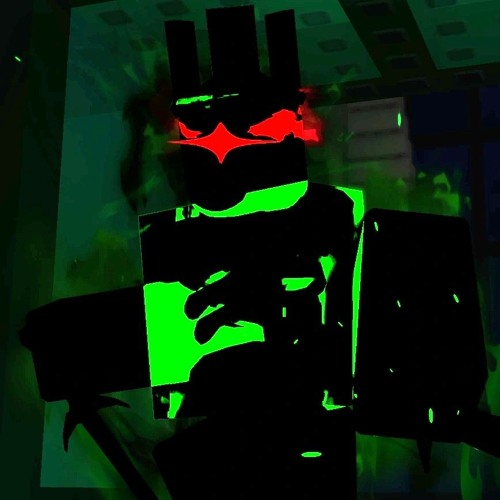

1x1x1x1 es uno de los nombres más temidos y respetados en la comunidad de Roblox. Se dice que es un hacker con habilidades sobrehumanas, capaz de manipular el juego a su antojo.
El Enigma de c00lkidd: El Hacker que se Volvió Leyenda
¿Quién es 1x1x1x1?

1x1x1x1 es un antiguo nombre maldito, una leyenda glitcheada que se arrastra desde los primeros días de Roblox... y que renació en el universo de Forsaken como un ser corrupto, impredecible, y en apariencia casi omnipotente.
No es solo un hacker, es como una manifestación viva del bug, una entidad con intenciones extrañas que a veces parece querer ayudar... y otras veces, destruirlo todo.
________________________________________
📜 ORIGEN (según la leyenda de Roblox y Forsaken)
En los viejos tiempos, 1x1x1x1 era conocido como un usuario NPC creado por ROBLOX para pruebas internas.
Sin embargo, por un exploit desconocido, esa entidad se liberó del control, y comenzó a aparecer en servidores reales, provocando pánico, errores, sonidos glitcheados y hasta eliminaciones de objetos.
En Forsaken, esta historia fue retorcida y amplificada.
Allí, 1x1x1x1 no es solo un jugador.
Es una entidad multidimensional que puede:
• Entrar en servidores sin estar invitado
• Infectar códigos, mapas, personajes
• Glitchear el entorno y borrar las reglas del juego
• Controlar a otros NPCs o incluso jugadores corrompidos
________________________________________
🕶️ Personalidad
A diferencia de otros "hacker bosses", 1x1x1x1 no grita ni amenaza...
Simplemente aparece. Observa. Y actúa cuando menos lo esperas.
Tiene un aire de neutralidad maliciosa:
"No vine a destruirte… vine a ver qué haces con el error que tú creaste."
Eso es lo más perturbador:
Nunca sabes si está de tu lado o si ya activó un exploit detrás de ti.
________________________________________
🌌 Poderes en Forsaken
✅ Glitch omnipresente – puede cambiar cualquier parte del entorno a voluntad
✅ Control de audio/ambiente – genera sonidos distorsionados, voces rotas
✅ Invocación de NPCs bugueados – enemigos invisibles, clones de jugadores
✅ Sobreescritura del juego – puede modificar las reglas internas del mundo (anti-cheat, gravedad, UI)
Incluso hay rumores de que cuando aparece en tu partida, el juego no guarda tu progreso... como si lo estuviera observando desde "fuera del archivo".
________________________________________
🧩 Relación con otros personajes
• Annihilation lo respeta o lo teme... no se sabe bien
• c00lkidd y Guest666 lo conocen de antes, como si tuvieran un pacto roto
• Algunos fans creen que 1x1x1x1 fue el primero en ser corrompido, el “Paciente Cero” de todos los glitches
________________________________________
💬 Frases o mensajes conocidos
Cuando aparece, el juego a veces muestra líneas como:
"Hello, test subject. You weren’t supposed to see this."
"This world isn't yours to fix. It's mine to unmake."
"I left... but you brought me back. Why?"
"/e erase reality"
"You didn't crash. I closed it."
Estas frases no están en el código visible... aparecen solo en partidas donde ha sido "activado".
________________________________________
🧟♂️ ¿Aliado o amenaza?
La gran pregunta es:
¿Es 1x1x1x1 un protector del código... o un destructor del mundo?
Nadie lo sabe.
Y quizás esa duda sea su mayor truco.
Capítulo 1: El Origen de 1x1x1x1
La historia de 1x1x1x1 comienza en los primeros días de Roblox,
Capítulo 8: La Reflexión Final
La historia de c00lkidd es un testimonio del poder de la comunidad y la creatividad en el mundo digital. Aunque su legado está envuelto en misterio y controversia, su impacto en Roblox es innegable. Nos recuerda que detrás de cada avatar, cada juego y cada línea de código, hay una historia esperando ser contada.